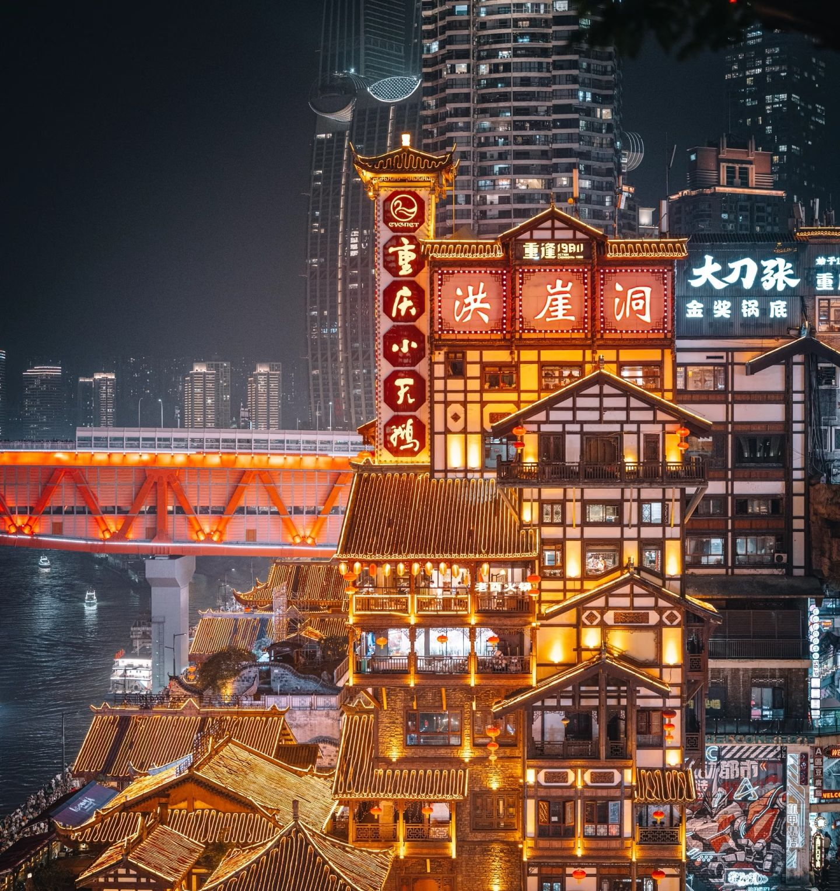
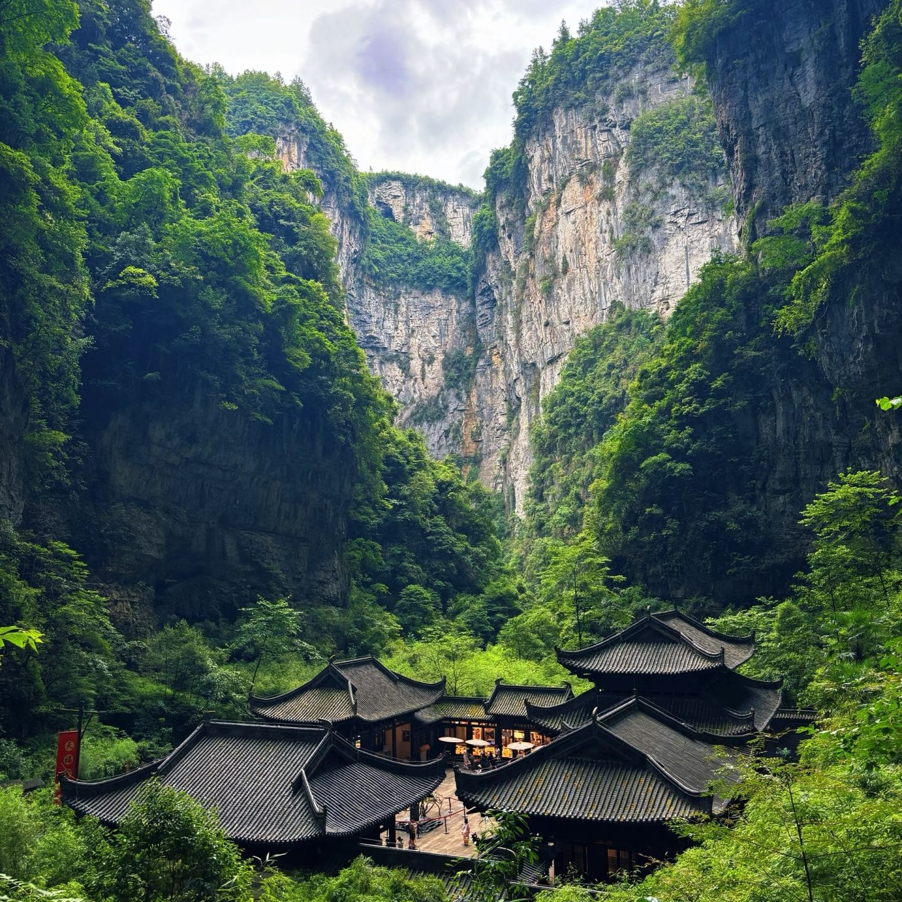
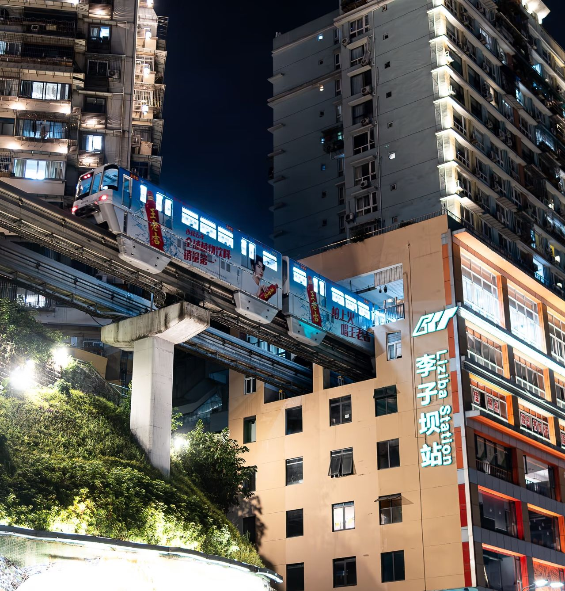

洪崖洞
📍 渝中区 · 嘉陵江畔洪崖洞是重庆最具代表性的地标之一，依山而建的吊脚楼群在夜晚灯火通明，宛如《千与千寻》中的奇幻世界。层层叠叠的建筑从江边一直延伸到山顶，是游客必到的打卡圣地。
夜景
吊脚楼
网红打卡

洪崖洞是重庆最具代表性的地标之一，依山而建的吊脚楼群在夜晚灯火通明，宛如《千与千寻》中的奇幻世界。层层叠叠的建筑从江边一直延伸到山顶，是游客必到的打卡圣地。
磁器口古镇始建于宋代，千年历史沉淀在青石板路上。陈麻花、毛血旺、手工糍粑遍布街巷，古色古香的明清建筑让人仿佛穿越回旧时的巴渝码头。

武隆天生三桥是世界自然遗产，三座天然石桥横跨峡谷。《满城尽带黄金甲》与《变形金刚4》在此取景。天坑底部仰望天空，方能体会大自然的鬼斧神工。

轻轨2号线穿楼而过的奇特景观火遍全网。站台设在居民楼内，全世界罕见。每天大量游客等候列车驶过，只为拍下那魔幻瞬间。